Vannes, poteaux d’incendie, accessoires de tuyauterie et tubes acier : Hydro Industrie fabrique et stocke en Algérie l’équipement de vos réseaux.
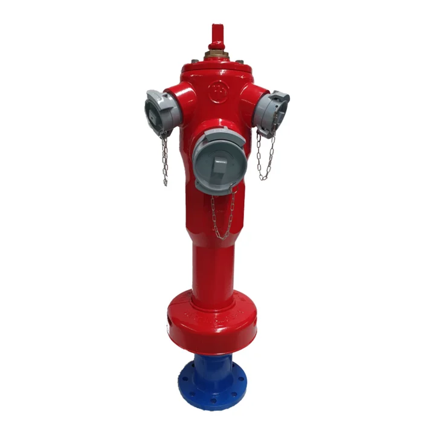
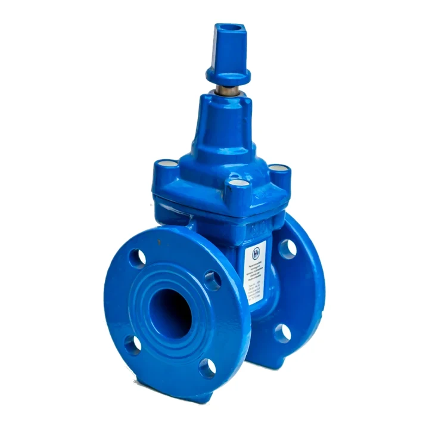
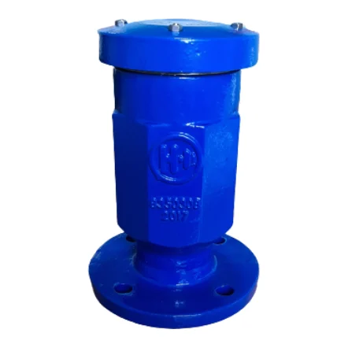
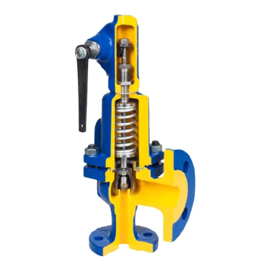
De la petite vanne de réservoir au tube spiralé de grand diamètre.
Vannes à opercule, papillon, clapets, ventouses et régulation pour l’eau.
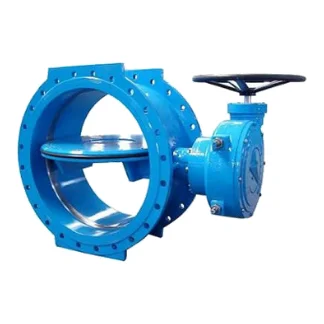
Poteaux HERO, RIA, sprinkleurs.
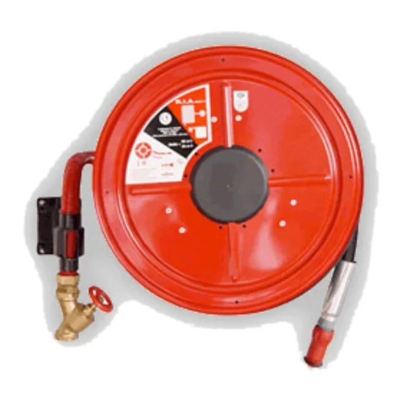
Soupapes, vannes vapeur, filtres.
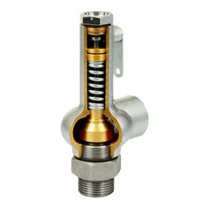
Brides et raccords.
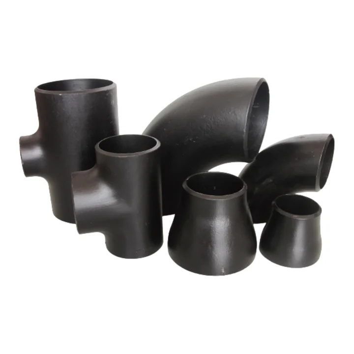

Sans soudure, revêtus, galvanisés et soudés spirale, en stock.
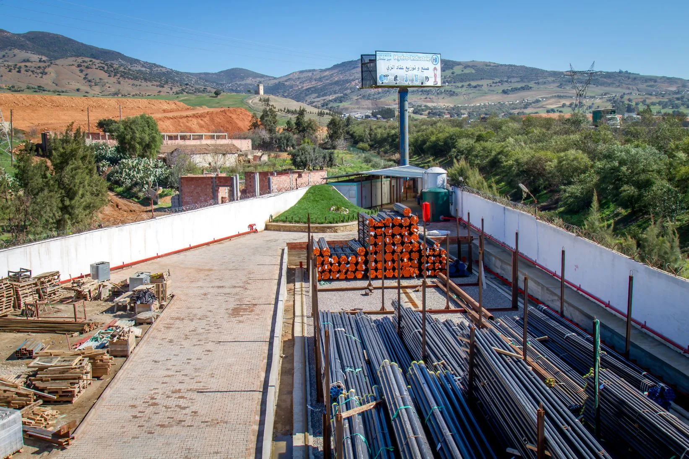
Filiale du Groupe Kherifi créée en 2010, Hydro Industrie associe une usine de fabrication, un parc de stockage et un atelier de préparation pour livrer vos chantiers sans attendre.
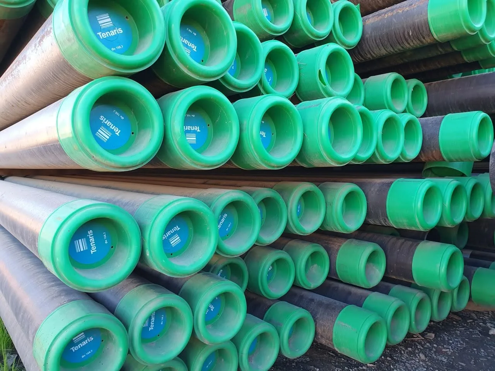
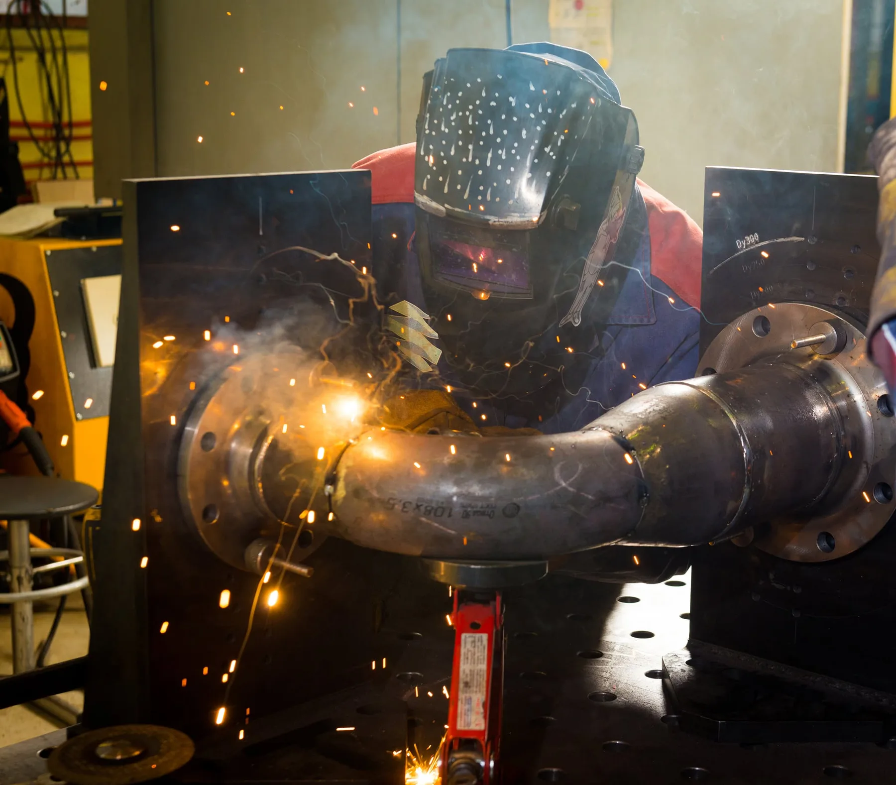
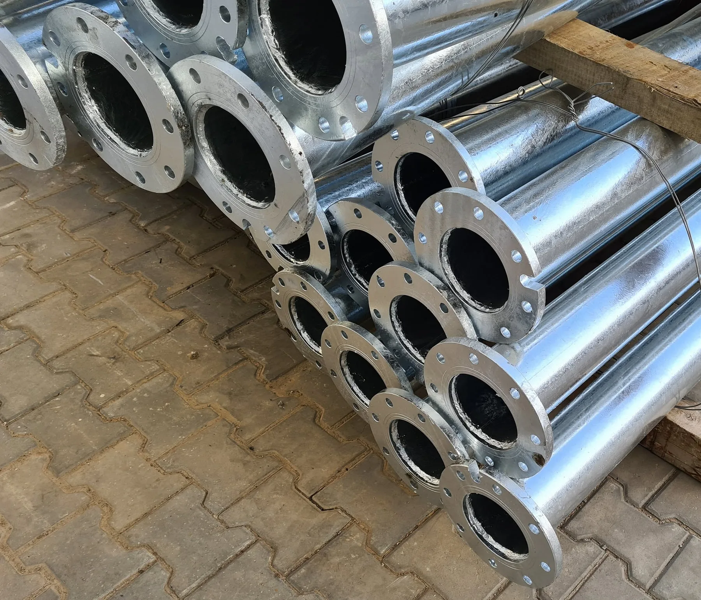
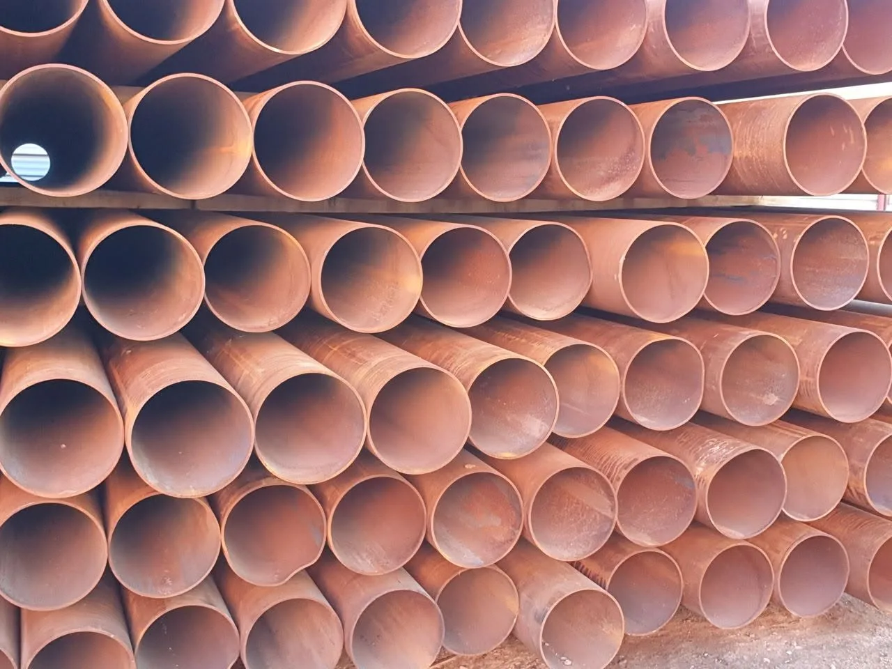
Vannes, ventouses et pièces pour réseaux AEP.
Clapets à boule, vannes guillotine, ventouses.
Bornes d’irrigation et tubes pour périmètres agricoles.
Poteaux HERO, RIA, sprinkleurs, tubes RAL 3002.
Soupapes de sûreté, filtres, tubes API 5L.
Circuits vapeur, stations de pompage, forage.
Envoyez votre bordereau : nous revenons vers vous avec prix et délais.